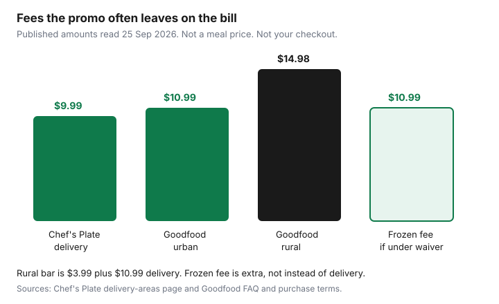

Subscriptions · Canada
Cancel or Pause Chef's Plate and Goodfood in Canada: Cutoffs and Fee Surprises
Chef’s Plate and Goodfood do not share a cancel button or a clock. One brand lets you skip from the menu and deactivate the plan in settings, on a Pacific deadline. The other bills a delivery fee, a rural add-on, and sometimes a frozen-box fee that the promo never mentioned, and its purchase terms put skip-or-cancel notice on Wednesday. Uninstalling an app does not stop either charge. The cutoff on the account does.
This page is the skip, pause, and cancel operation for households that already have a box on the way. Whether a first-week trial beats a No Frills cart is a different question, and it lives on the meal-kit trial guide. Grocery delivery passes are the PC Express, Voilà, and Instacart comparison. Put the weekly charge on the subscription sheet so a “skipped” week that still billed does not hide for a quarter.
Disclosure: This guide has no natural affiliate offer. Saving Optimizer does not sell cancel services and does not claim a partnership with Chef’s Plate, Goodfood, or HelloFresh. Education only, not legal advice. The cutoff and the fee on your account are the ones that bill.
Key takeaways
- Chef’s Plate: skip up to six weeks ahead from My Menu. Changes are due by 11:59 p.m. Pacific, four days before delivery. Deactivate under Settings. Miss that window and the next box still arrives and still bills.
- Goodfood’s FAQ, read 25 Sep 2026: skip from Manage scheduled deliveries, and manage up to eight weeks ahead. Processing cutoffs are 11:59 p.m. Eastern, four days before the delivery day. The purchase terms also say skip or cancel notice is due on or before Wednesday before midnight.
- Fees that survive a cheap promo: Chef’s Plate’s delivery-areas page states a $9.99 flat delivery fee, plus possible handling. Goodfood’s terms state a $10.99 delivery fee on all orders, $3.99 more for a rural postal code, and a $10.99 frozen fee unless the frozen goods meet the waiver.
- Goodfood has no sign-up or cancellation fee on its FAQ. Credits expire when the account is cancelled. Changing the plan type unskips weeks you had already skipped. Save the confirmation email.
- If you skip more weeks than you receive, cancel. A promo that expires in 49 days is not a reason to stay on the full price.
Chef's Plate: skip up to 6 weeks ahead; deactivate plan path
Chef’s Plate’s own “how to cancel or pause” page, read 25 Sep 2026, is the path. The site styles the brand “Chefs Plate.” The steps are the same either way. To skip, log in, open My Menu, choose the date, click Change or skip delivery, and select Skip Week. The page says you can skip as many as six weeks in advance. Any change has to be in before 11:59 p.m. Pacific, four days before the delivery date. A household in Toronto or Halifax is not on Pacific time. Four days before a Thursday delivery is Sunday night in Vancouver and later the same evening in the east. Do it the day you think of it, not the evening of the deadline.
There is no minimum term on the plan FAQ we read: skip or cancel before that same deadline. To cancel, log in, open the menu, select Settings, scroll to Deactivate your Plan, select Cancel Anyway, enter a reason, and click Deactivate Now. The page says the plan is then cancelled. If you do not finish that process four days before the next delivery, you still receive the box and you are still charged for it. A half-finished deactivate screen is not a cancel. Wait for the confirmation and save it with the subscription sheet.
Skipping six weeks is a pause, not an exit. The plan is still armed for week seven. If the reason you are skipping is that you will not cook the box, deactivate instead of stacking skips you will forget to renew. The keep-or-kill guide is the four-week test for whether the box should come back at all.
Goodfood: skip/manage scheduled deliveries and delivery-day cutoffs
Goodfood’s FAQ, read 25 Sep 2026, says you do not have to order every week. Skip from the Weekly deliveries page with Skip Week, or from your name, then Subscriptions, then Manage scheduled deliveries, then Skip. The same FAQ says you can manage up to eight weeks of deliveries ahead, and that you can select recipes up to four weeks ahead. Unskip is the same screen if you change your mind before the cutoff. The cutoff is printed on the weekly tab. Do not trust a memory of “sometime Wednesday.”
The FAQ also maps when orders are processed, at 11:59 p.m. Eastern, four days before the delivery day: Sunday night for a Thursday box, Monday night for a Friday box, Tuesday night for a Friday box, Wednesday night for a Sunday box, Thursday night for a Monday box, Friday night for a Tuesday box, and Saturday night for a Wednesday box. The purchase terms, read the same day, say it more bluntly: if you want to skip a week or cancel, give notice on or before Wednesday before midnight, or you receive the scheduled box and the card is charged. Where the weekly tab, the FAQ map, and that Wednesday sentence disagree, use the earliest one and screenshot it. A Friday delivery with a Monday-night process date is earlier than “Wednesday” in plain English. The tab wins because it is the week you are about to be billed for.
One trap is in the terms, not the FAQ: if you modify the weekly plan type, upcoming weeks you had skipped are automatically unskipped. Changing from three recipes to two, or the other way, can put a box back on a week you thought was empty. After any plan edit, open Manage scheduled deliveries and confirm the skips are still there. Goodfood also says it does not deliver on Christmas, Boxing Day, or New Year’s Day, and that a box which would have fallen on those days is postponed to the next day. A postponed box is not a skipped box. If you will be away, skip it before the cutoff rather than hoping the holiday erases the charge.
| Brand | How far ahead you can skip | Deadline we read | Where cancel lives |
|---|---|---|---|
| Chef’s Plate | Up to 6 weeks | 11:59 p.m. Pacific, 4 days before delivery | Settings, Deactivate your Plan, Cancel Anyway, Deactivate Now |
| Goodfood | FAQ: manage up to 8 weeks; recipes up to 4 weeks | 11:59 p.m. Eastern, 4 days before the delivery day. Terms also say Wednesday before midnight. | Member Happiness live chat or chef@makegoodfood.ca. FAQ says the account can skip, pause, or reactivate. |
Delivery, rural, and frozen-box fees that survive cheap promo math
A “$1 a meal” banner is a discount on food, and often not on the box that carries it. Chef’s Plate’s delivery-areas page states a $9.99 flat delivery fee for all plans, and says some areas that are harder to reach may add a handling fee, shown when you select the plan and check out. A homepage offer we read also advertised free shipping beside “up to 20 free meals.” The offer terms say the discount is not valid on premiums, meal upgrades, add-ons, taxes, or shipping fees, and that it expires 49 days after the offer purchase at 11:59 p.m. Eastern. Read the checkout. If a shipping line is still there, the headline did not remove it.
Goodfood’s FAQ says there is no sign-up fee and no cancellation fee, then lists the fees that do apply. Delivery is $10.99 on all orders. A rural fee of $3.99 is added when the first three characters of the postal code contain a 0, the example they give is J0P, which is the Canada Post rural indicator inside the forward sortation area. Urban orders pay the $10.99 delivery fee alone. A frozen-box fee is charged to ship frozen products and is waived when the dollar value of frozen products is $64.99 or more, on the FAQ. The purchase terms say a frozen fee of $10.99 applies if the frozen items total less than $64.99, and that the fee is waived if that total exceeds $64.98. A small bag of frozen add-ons can cost as much as the delivery fee. The terms also describe Goodfood+, an optional membership that can apply free delivery. The membership fee is on the account, not in the public fee table we read. Free delivery only helps when the membership costs less than the $10.99 fees on the weeks you will actually receive.
Add the lines in this order before you decide the promo was cheap: plan or basket price after the discount, premium recipe upcharges, market add-ons, delivery, rural if the postal code qualifies, frozen fee if you are under the waiver, then the tax treatment on the checkout. Goodfood’s terms say prices are in Canadian dollars and describe taxes as included in product prices and in the delivery and frozen fees based on province, and they also say the checkout may include GST or HST. The checkout total is the number to write down. Chef’s Plate’s offer text says the promo is not valid on taxes or shipping. A per-serving price that ignores $9.99 or $10.99 is not the week you will pay when the discount ends.

Cancel confirmation and last billable box rules
Chef’s Plate is explicit about the last box: finish Deactivate Now at least four days before the next delivery, or that box is still yours and still billed. Screenshot the deactivate confirmation. If the next statement shows a charge after that date, the screenshot is what you send to support. Do not dispute the card first and hope the plan notices.
Goodfood’s purchase terms say you may cancel the account or a weekly or monthly plan at any time by contacting Member Happiness on live chat or at chef@makegoodfood.ca. The hours on the terms and the contact page, read 25 Sep 2026, are Monday 9:00 a.m. to 9:00 p.m., Tuesday to Thursday 11:00 a.m. to 7:00 p.m., Friday 9:00 a.m. to 5:00 p.m., and Sunday 9:00 a.m. to 5:00 p.m. Eastern, closed Saturday. Email replies are described as 24 to 48 hours, so an email sent on Friday night can miss a Wednesday cutoff. Use chat while an agent is on, and ask for the end date in the reply. The FAQ says there is no cancellation fee. The same terms say skip or cancel notice is due on or before Wednesday before midnight or the scheduled box still bills. The FAQ’s day-by-day process times can be earlier than that Wednesday. Cancel before the earlier of the two.
Credits are not cash. Goodfood’s terms say credits stay only while the account is active, and cancelling the account cancels the credits. If a credit is large enough to cover a box you will actually cook, use it on that box, then cancel before the next cutoff. A gift card balance is a separate question for Member Happiness; the terms say prepaid cards are non-refundable. Goodfood+ cancels in account settings or through support, and cancellation stops future renewals of that membership. Cancelling the meal plan and leaving Goodfood+ on is how a “free delivery” membership becomes the new subscription.
On 5 August 2026, Goodfood’s FAQ said the company obtained an Initial Order under the Companies’ Creditors Arrangement Act, with Raymond Chabot Inc. as court-appointed monitor, and that orders, skips, pauses, credits, and gift cards were continuing. That is the company’s description of a restructuring, not a bankruptcy notice and not a reason to ignore a cutoff. Court documents are on the monitor’s site linked from that FAQ. This page is not advice about the proceeding. If a charge posts after you have written confirmation that the plan ended, treat it like any other recurring charge on the hidden-charges guide: the confirmation email first, the card dispute second.
The terms also say Goodfood may amend the agreement on 30 days’ notice, and that if an amendment increases your obligations you can refuse it and terminate without cost, penalty, or cancellation indemnity by using “I Do Not Agree” no later than 30 days after the amendment comes into force. Refusing ends the account and expires credits. That is a contract term to read if a price-change email arrives. It is not a shortcut you invent for an ordinary skip.
Promo expiry: model post-offer cost before staying subscribed
Chef’s Plate’s offer text, read 25 Sep 2026, says the offer is for new customers on a qualifying auto-renewing subscription and expires 49 days after the offer purchase at 11:59 p.m. Eastern. “Up to 20 free meals” is described as a discount over five weeks on a five-person, four-recipe plan, and the discount varies for other sizes. One eligible $1 or $3 add-on a week is a separate perk, and it is not valid on premiums, upgrades, other add-ons, taxes, or shipping. When day 50 arrives, the plan price on the account is the price. Put that date on the calendar the day you redeem, not the week the full charge surprises you.
Goodfood’s terms say a free-meal offer can end without a separate notice that full billing has started. The FAQ’s coupon policy is one acquisition coupon per new member, one account per address, and one card on one account. Model the first full week before you decide to “see how it goes”: basket at the undiscounted plan price, plus $10.99 delivery, plus $3.99 if the postal code is rural, plus $10.99 if frozen goods are under the waiver, plus any premium per-portion upcharge. Compare that week with the post-promo keep-or-kill test. A referral credit, the FAQ mentioned $35 when a new member orders and up to $86 off a friend’s first four orders, is a credit on a future box, not a lower regular price. Credits change if the program changes. Read the current line in the account.
Decision rule: if you skip more than you receive, cancel
Count eight delivery weeks, including the ones you skipped. If skipped weeks outnumber weeks a box actually arrived and was cooked, the subscription is a forgot-to-cancel habit. Six skips and two boxes is a cancel. Four and four is a household that should pre-schedule the skips around holidays and then re-count. The skip tools exist so a vacation does not have to become a cancellation. They are not a second product you pay for in guilt.
Use the brand’s own horizon. Chef’s Plate will take six weeks of skips. Goodfood’s FAQ says eight weeks can be managed ahead. If you already know the next month is travel, cottage, or a freezer that is full, enter those skips today and set a reminder four days before the first week you might want a box again. If you cannot name that week, deactivate or email the cancel. A plan that only survives by permanent skipping is more expensive than groceries you buy when you are home. The Food guide’s flyer meal plan is the replacement routine, not another kit trial.
Sources & date stamps
- Chef’s Plate, “How to Cancel or Pause Your Chefs Plate Subscription,” and the plan FAQ, read 25 Sep 2026: skip up to six weeks; 11:59 p.m. Pacific, four days before delivery; Settings, Deactivate your Plan; a missed window still bills the next box; no minimum term on the FAQ we read.
- Chef’s Plate delivery-areas page, read 25 Sep 2026: $9.99 flat delivery fee, possible extra handling at checkout. Offer terms on the same read: new customers, expires 49 days after purchase at 11:59 p.m. Eastern; discount not valid on premiums, upgrades, add-ons, taxes, or shipping.
- Goodfood FAQ (makegoodfood.ca/subscriptions/plan/faq), read 25 Sep 2026: no sign-up or cancellation fee; delivery $10.99; rural $3.99 when the FSA contains a 0; frozen fee waived at $64.99 or more of frozen products; skip path and eight-week scheduling; 11:59 p.m. Eastern process times; CCAA Initial Order dated 5 Aug 2026, service described as continuing.
- Goodfood purchase terms, read 25 Sep 2026: $10.99 delivery; rural $3.99 plus $10.99; frozen fee $10.99 under $64.99 and waived above $64.98; Wednesday-before-midnight skip or cancel notice; plan-type changes unskip weeks; cancel via chat or chef@makegoodfood.ca; credits end with the account; 30-day amendment refusal; Goodfood+ cancels in settings or via support.
Frequently asked questions
Can I skip Chef's Plate for a month without cancelling?
Yes. Chef's Plate's pause page, read 25 Sep 2026, says you can skip up to six weeks ahead from My Menu. The change is due by 11:59 p.m. Pacific, four days before delivery. A skip is not a cancel. Week seven still bills unless you deactivate.
What is Goodfood's cutoff?
The FAQ maps processing to 11:59 p.m. Eastern, four days before the delivery day. The purchase terms also say skip or cancel notice is due on or before Wednesday before midnight, or the scheduled box still bills. Use the weekly tab if it is earlier, and screenshot it.
Does the promo include delivery?
Do not assume it. Chef's Plate's delivery-areas page states a $9.99 flat fee, and the offer terms we read say the discount is not valid on shipping. Goodfood's terms state $10.99 delivery on all orders, plus $3.99 on a rural postal code. Read the checkout.
Is there a Goodfood cancellation fee?
The FAQ says there is no sign-up fee and no cancellation fee. You still owe a box that is already past the cutoff. Credits expire when the account is cancelled. Cancel by live chat or chef@makegoodfood.ca and keep the end date.
What if I skip more weeks than I cook?
Cancel. Six skips and two boxes over eight weeks is a habit, not a plan. Pre-skip a holiday if you will be away. Deactivate or email the cancel if you cannot name the next week you will cook.